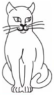
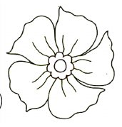
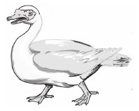

Somo la pili: Kuchora kwenye daftari na kupaka rangi
Somo la pili
Kuchora kwenye daftari na kupaka rangi
Katika somo hili utajifunza kuchora kwenye daftari. Pia,
utapaka rangi michoro hiyo.
Chora michoro hii kwenye daftari kisha paka rangi kila
mchoro.



Andika jibu kwa mkono katika sehemu hii.